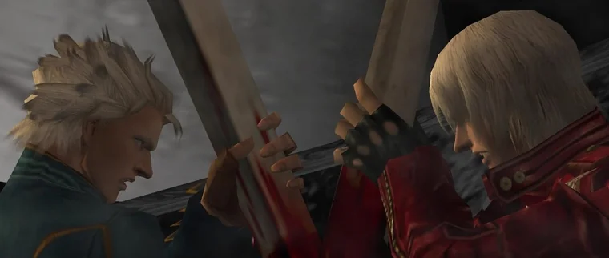

Historia:

Dante e Vergil: A rivalidade entre Dante e Vergil, filhos do demônio Sparda, é o núcleo emocional de Devil May Cry. Separados na infância após um ataque demoníaco, Vergil buscou poder para lidar com o trauma, enquanto Dante abraçou sua humanidade. A luta principal ocorre em DMC3, onde Vergil busca abrir o portal para o submundo.